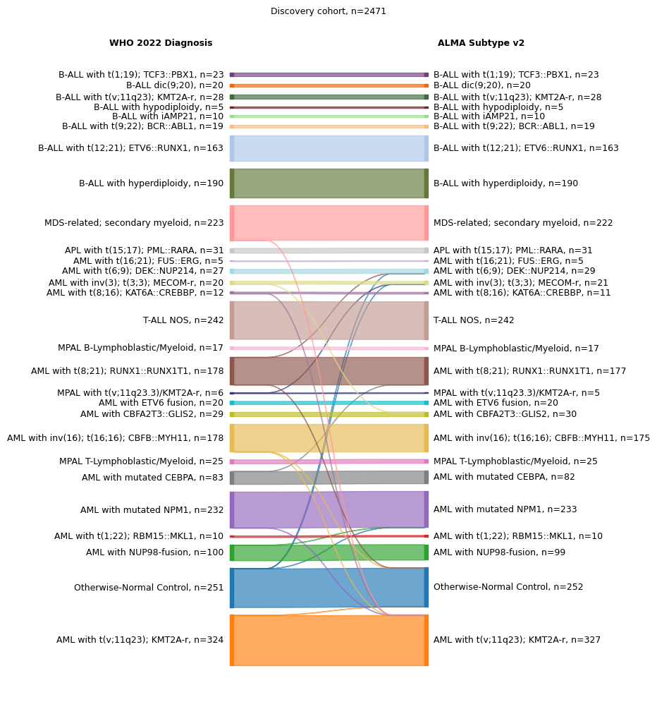
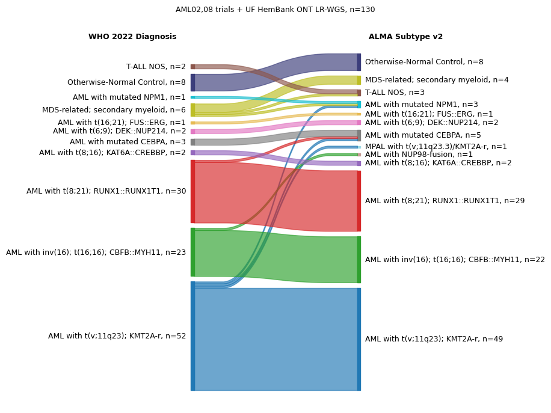
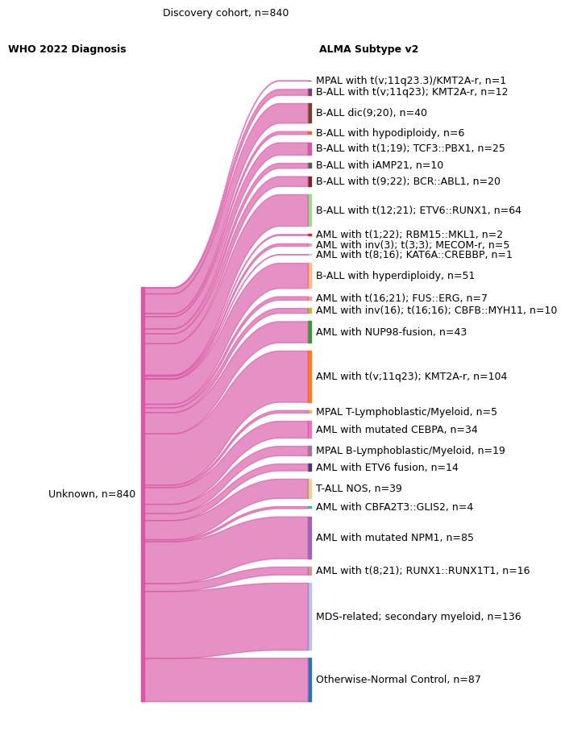
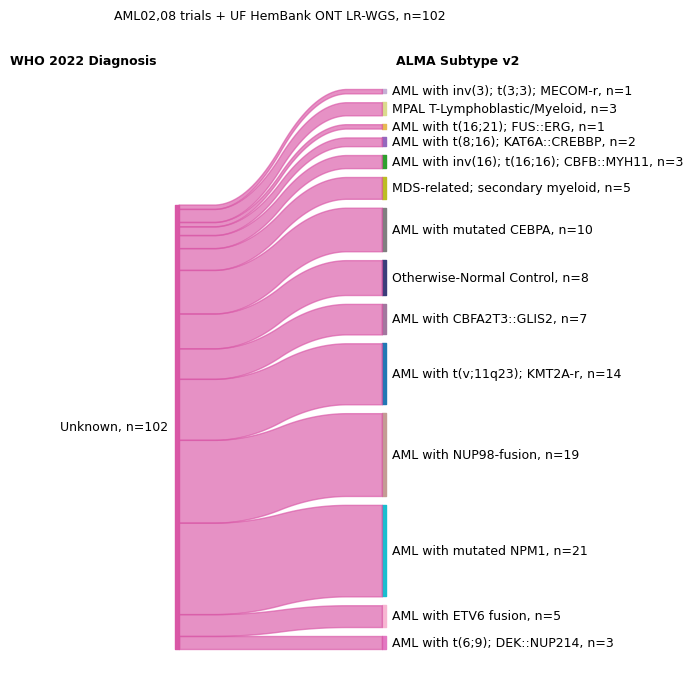
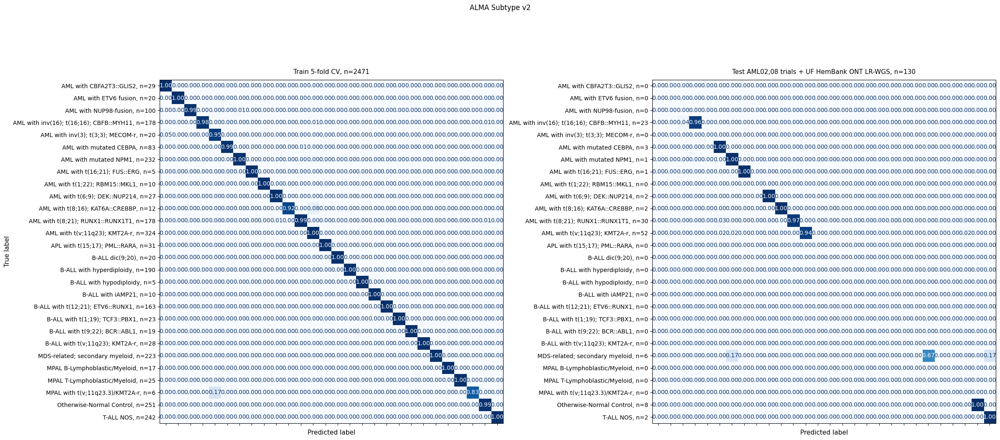

Plots (ALMA Subtype v2)#
Load data#
Show code cell source
import pandas as pd
import sys
sys.path.append('../')
from utils.plots import *
output_notebook()
model_name1 = 'ALMA Subtype v2'
model_name2 = 'AML Epigenomic Risk'
model_name3 = '38CpG-AMLsignature'
clinical_data = '/mnt/f/ALMA/Intermediate_Files/clinical_data.xlsx'
prediction_data_train = '../../alma-transformer/results/3314samples_331556cpgs_withbatchcorrection_bvalues_predictions.csv'
prediction_data_test = '../../alma-transformer/results/201samples_331556cpgs_nobatchcorrection_bvalues_predictions.csv'
# Create df by first concat prediction data train and test, then join with clinical data
df1 = pd.read_csv(prediction_data_train, index_col=0).sort_index()
df2 = pd.read_csv(prediction_data_test, index_col=0).sort_index()
df = pd.concat([df1, df2], axis=0).sort_index()
df = df.join(pd.read_excel(clinical_data, index_col=0)).sort_index()
# Read ONT hematopathology test cohort
nanopore = pd.read_csv('/mnt/f/ALMA/Intermediate_Files/nanoporeseq_epigenomic_predictions_clinicaldata_FM_v5_11-27-2025.csv', index_col=0)
# Concat with df
df2 = pd.concat([df, nanopore], axis=0).sort_index()
# Define train and test samples
df_train = df2[df2['Train-Test']=='Train Sample']
df_test = df2[df2['Train-Test'] == 'Test Sample']
# remove duplicates from the test cohort
df_test = df_test[~df_test['Patient_ID'].duplicated(keep='last')]
# Prognostic model samples
df_px = df[~df['Vital Status at 5y'].isna()]
df_px2 = df_px[df_px['Clinical Trial'].isin(['AAML0531', 'AAML1031', 'AAML03P1'])]
df_px2 = df_px2[df_px2['Sample Type'].isin(
['Diagnosis', 'Primary Blood Derived Cancer - Bone Marrow', 'Primary Blood Derived Cancer - Peripheral Blood'])]
df_px2 = df_px2[~df_px2['Patient_ID'].duplicated(keep='last')]
# drop the samples with missing labels for the ELN AML 2022 Diagnosis
df_dx = df_train[~df_train['WHO 2022 Diagnosis'].isna()]
# exclude the classes with fewer than 5 samples
df_dx = df_dx[~df_dx['WHO 2022 Diagnosis'].isin(['AML with t(9;22); BCR::ABL1'])]
Patient Characteristics#
ALMA (unsupervised)#
Show code cell source
from tableone import TableOne
from datetime import date
columns = ['Hematopoietic Entity','Age (group years)','Sex',
'Clinical Trial',]
mytable_cog = TableOne(df_train.reset_index(), columns,
overall=False, missing=False,
pval=False, pval_adjust=False,
htest_name=True,dip_test=True,
tukey_test=True, normal_test=True,
order={'FLT3 ITD':['Yes','No'],
'Age (group years)':['0-5','5-13','13-39','39-60'],
'MRD 1 Status': ['Positive'],
'Risk Group': ['High Risk', 'Standard Risk'],
'FLT3 ITD': ['Yes'],
'Leucocyte counts (10⁹/L)': ['≥30'],
'Age group (years)': ['≥10']})
# mytable_cog.to_excel('../data/pt_characteristics_alma_model_' + str(date.today()) +'.xlsx')
mytable_cog.tabulate(tablefmt="html",
# headers=[score_name,"",'Missing','Discovery','Validation','p-value','Statistical Test']
)
Show code cell output
| Overall | ||
|---|---|---|
| n | 3314 | |
| Hematopoietic Entity, n (%) | Acute lymphoblastic leukemia (ALL) | 700 (28.3) |
| Acute myeloid leukemia (AML) | 1221 (49.4) | |
| Acute promyelocytic leukemia (APL) | 31 (1.3) | |
| Mixed phenotype acute leukemia (MPAL) | 48 (1.9) | |
| Myelodysplastic syndrome (MDS or MDS-like) | 223 (9.0) | |
| Otherwise-Normal (Control) | 251 (10.1) | |
| Age (group years), n (%) | 0-5 | 480 (24.1) |
| 5-13 | 483 (24.2) | |
| 13-39 | 663 (33.2) | |
| 39-60 | 165 (8.3) | |
| 60+ | 203 (10.2) | |
| Sex, n (%) | Female | 885 (49.1) |
| Male | 918 (50.9) | |
| Clinical Trial, n (%) | AAML03P1 | 72 (2.2) |
| AAML0531 | 628 (18.9) | |
| AAML1031 | 587 (17.7) | |
| BM normal AAML0531 | 41 (1.2) | |
| Beat AML Consortium | 316 (9.5) | |
| CCG2961 | 41 (1.2) | |
| CETLAM SMD-09 (MDS-tAML) | 166 (5.0) | |
| French GRAALL 2003–2005 | 141 (4.3) | |
| Japanese AML05 | 64 (1.9) | |
| NOPHO ALL92-2000 | 933 (28.2) | |
| TARGET ALL | 131 (4.0) | |
| TCGA AML | 194 (5.9) |
Fine-tuned (supervised) Dx and Px models#
Show code cell source
columns = ['Age (years)','Age group (years)','Sex','Race or ethnic group',
'Hispanic or Latino ethnic group', 'MRD 1 Status',
'Leucocyte counts (10⁹/L)', 'BM leukemic blasts (%)',
'Risk Group','FLT3 ITD', 'Clinical Trial']
df_test['Age (years)'] = df_test['Age (years)'].astype(float)
all_cohorts = pd.concat([df_dx, df_px2],
axis=0, keys=[model_name1,model_name2 + ', ' + model_name3],
names=['cohort']).reset_index()
mytable_cog = TableOne(all_cohorts, columns,
overall=False, missing=False,
pval=False, pval_adjust=False,
htest_name=True,dip_test=True,
tukey_test=True, normal_test=True,
order={'FLT3 ITD':['Yes','No'],
'Race or ethnic group':['White','Black or African American','Asian'],
'MRD 1 Status': ['Positive'],
'Risk Group': ['High Risk', 'Standard Risk'],
'FLT3 ITD': ['Yes'],
'Leucocyte counts (10⁹/L)': ['≥30'],
'Age group (years)': ['≥10']},
groupby='cohort')
# mytable_cog.to_excel('../data/pt_characteristics_fine-tuned_models_' + str(date.today()) +'.xlsx')
mytable_cog.tabulate(tablefmt="html",
# headers=[score_name,"",score_name,'Validation','p-value','Statistical Test']
)
Show code cell output
| ALMA Subtype v2 | AML Epigenomic Risk, 38CpG-AMLsignature | ||
|---|---|---|---|
| n | 2471 | 946 | |
| Age (years), mean (SD) | 19.2 (19.7) | 9.4 (6.3) | |
| Age group (years), n (%) | ≥10 | 528 (47.4) | 463 (48.9) |
| <10 | 586 (52.6) | 483 (51.1) | |
| Sex, n (%) | Female | 711 (50.5) | 468 (49.5) |
| Male | 697 (49.5) | 478 (50.5) | |
| Race or ethnic group, n (%) | White | 1064 (80.5) | 697 (79.1) |
| Black or African American | 131 (9.9) | 102 (11.6) | |
| Asian | 65 (4.9) | 43 (4.9) | |
| American Indian or Alaska Native | 7 (0.5) | 5 (0.6) | |
| Other | 48 (3.6) | 28 (3.2) | |
| Pacific Islander | 7 (0.5) | 6 (0.7) | |
| Hispanic or Latino ethnic group, n (%) | Hispanic or Latino | 209 (19.6) | 185 (20.2) |
| Not Hispanic or Latino | 858 (80.4) | 731 (79.8) | |
| MRD 1 Status, n (%) | Positive | 284 (29.6) | 260 (31.5) |
| Negative | 675 (70.4) | 566 (68.5) | |
| Leucocyte counts (10⁹/L), n (%) | ≥30 | 579 (52.4) | 467 (49.4) |
| <30 | 526 (47.6) | 479 (50.6) | |
| BM leukemic blasts (%), mean (SD) | 65.7 (24.1) | 63.8 (24.5) | |
| Risk Group, n (%) | High Risk | 198 (14.2) | 129 (13.8) |
| Standard Risk | 628 (45.0) | 454 (48.7) | |
| Low Risk | 570 (40.8) | 349 (37.4) | |
| FLT3 ITD, n (%) | Yes | 180 (16.2) | 165 (17.5) |
| No | 932 (83.8) | 779 (82.5) | |
| Clinical Trial, n (%) | AAML03P1 | 62 (2.5) | 36 (3.8) |
| AAML0531 | 517 (20.9) | 507 (53.6) | |
| AAML1031 | 495 (20.0) | 403 (42.6) | |
| BM normal AAML0531 | 41 (1.7) | ||
| Beat AML Consortium | 192 (7.8) | ||
| CCG2961 | 31 (1.3) | ||
| CETLAM SMD-09 (MDS-tAML) | 166 (6.7) | ||
| French GRAALL 2003–2005 | 141 (5.7) | ||
| Japanese AML05 | 9 (0.4) | ||
| NOPHO ALL92-2000 | 641 (25.9) | ||
| TARGET ALL | 56 (2.3) | ||
| TCGA AML | 120 (4.9) |
Sankey plots#
Note
Sankey plots below compare the distribution of categories. The width of the lines is proportional to the number of patients in each group.
Samples with annotated diagnosis info#
Show code cell source
colors = get_custom_color_palette()
draw_sankey_plot(df_dx, 'WHO 2022 Diagnosis', model_name1, colors,
title='Discovery cohort', fig_size=(4, 12),
fontsize=9, nan_action='drop1')
draw_sankey_plot(df_test, 'WHO 2022 Diagnosis', model_name1, colors,
title= 'AML02,08 trials + UF HemBank ONT LR-WGS',fig_size=(4, 8),
fontsize=9, nan_action='drop1')
Show code cell output


Predictions in samples for which no WHO 22 Dx data was available#
Show code cell source
draw_sankey_plot(df_train, 'WHO 2022 Diagnosis', model_name1, colors,
title='Discovery cohort', fig_size=(3, 11),
fontsize=9, nan_action='keep-only')
draw_sankey_plot(df_test, 'WHO 2022 Diagnosis', model_name1, colors,
title= 'AML02,08 trials + UF HemBank ONT LR-WGS',fig_size=(3, 8),
fontsize=9, nan_action='keep-only')
Show code cell output


Performance metrics#
Diagnosis#
Show code cell source
# Drop nans from df_test['WHO 2022 Diagnosis']
df_test2 = df_test.dropna(subset=['WHO 2022 Diagnosis'])
df_dict = {
'Train 5-fold CV': df_dx.fillna('Not confident'),
'Test AML02,08 trials + UF HemBank ONT LR-WGS': df_test2.fillna('Not confident'),
}
plot_confusion_matrix_stacked(
df_dict=df_dict,
true_col='WHO 2022 Diagnosis',
pred_col=model_name1,
class_col='WHO 2022 Diagnosis',
title=str(model_name1),
figsize_per_plot=(12, 12),
)
Show code cell output

Metrics:
| | Accuracy | Weighted F1 | Cohen's Kappa | Micro Sensitivity | Micro Specificity |
|:---------------------------------------------|-----------:|--------------:|----------------:|--------------------:|--------------------:|
| Train 5-fold CV | 0.994 | 0.994 | 0.993 | 0.994 | 1 |
| Test AML02,08 trials + UF HemBank ONT LR-WGS | 0.946 | 0.958 | 0.929 | 0.946 | 0.996 |
Watermark#
Author: Francisco_Marchi@Lamba_Lab_UF
Last updated: 2025-11-28
Python implementation: CPython
Python version : 3.10.13
IPython version : 8.27.0
pandas : 2.2.2
seaborn : 0.13.2
matplotlib: 3.9.2
tableone : 0.8.0
sklearn : 1.5.2
lifelines : 0.28.0
scipy : 1.12.0
Compiler : GCC 11.4.0
OS : Linux
Release : 6.6.87.1-microsoft-standard-WSL2
Machine : x86_64
Processor : x86_64
CPU cores : 32
Architecture: 64bit
Git repo: git@github.com:f-marchi/ALMA.git